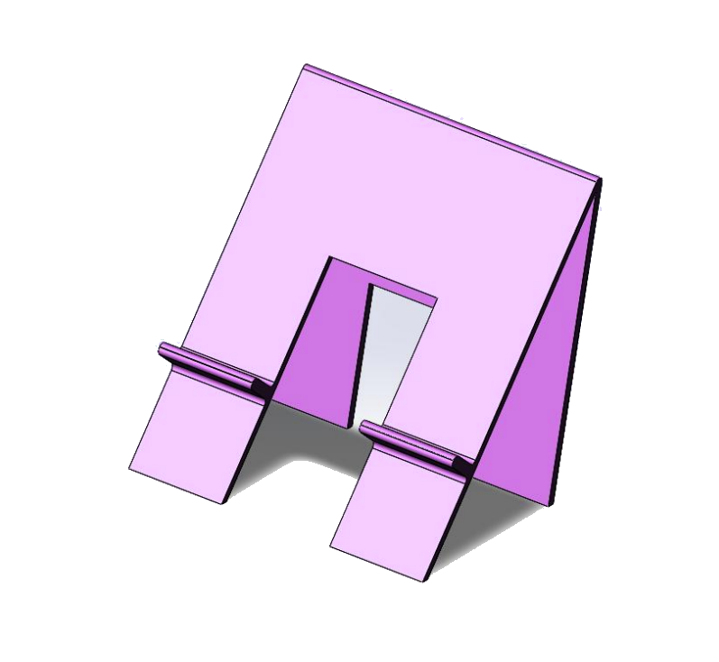
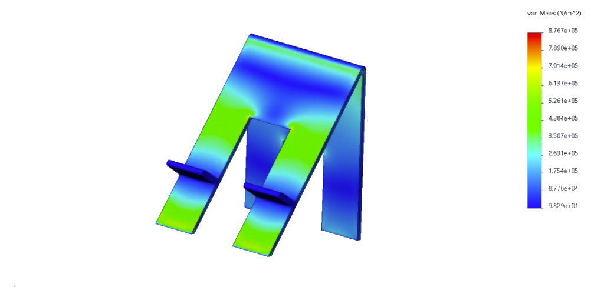
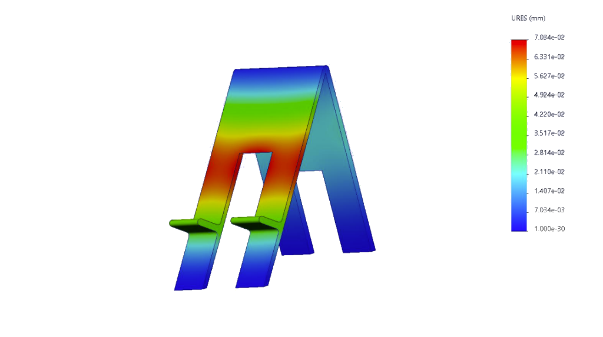
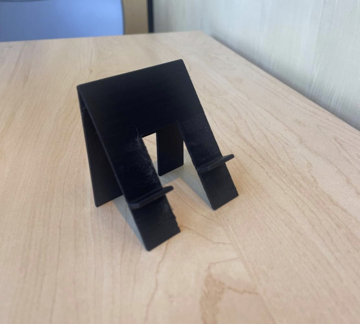
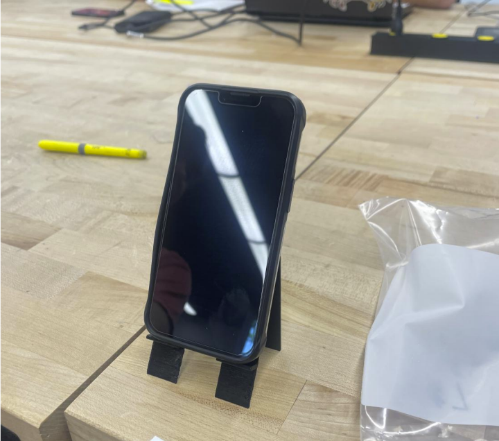
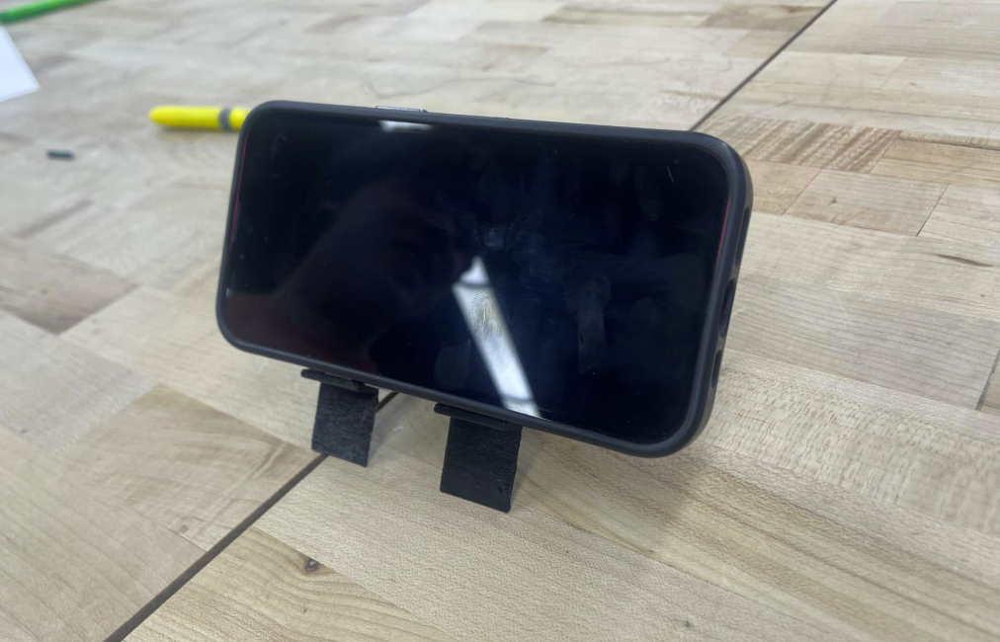

Project Overview
This project centered around the CAD modeling, finite element structural analysis, and additive manufacturing of an ultra-low-cost desktop phone stand tailored for an iPhone 14 Pro (with a protective case). The core objective was to achieve robust multi-orientation stability in both portrait and landscape viewing positions while incorporating an open pass-through channel for continuous charging cable routing—all while adhering to a strict sub-$1.00 total production cost threshold.
Starting in SolidWorks, I modeled an ergonomic A-frame architecture featuring dual cantilevered support flanges and a central power cable clearance slot. To ensure structural durability prior to physical production, linear static Finite Element Analysis (FEA) was performed in SolidWorks Simulation by applying distributed downward operational loads across the support ledges under fixed base boundary conditions. Through 3 iterative design cycles, stress concentrations and low moment-of-inertia risks at the flange transitions were systematically eliminated by introducing generous stress-relief fillets and optimizing viewing pitch angles.
The final design was fabricated via FDM 3D printing in PLA, yielding an ultra-lightweight 0.04 lb (18 g) stand capable of sustaining over 6× its own mass without plastic deformation. FEA simulations confirmed a peak von Mises stress of only 0.88 MPa (yielding a Factor of Safety > 45) and a negligible maximum deflection of 0.070 mm (70 µm), demonstrating a highly repeatable balance of lean value engineering, rapid prototyping, and structural optimization.
Key Contributions
- Engineered an ultra-lightweight 0.04 lb (18 g) A-frame PLA phone stand in SolidWorks featuring dual support flanges and a central pass-through cable routing channel.
- Executed linear static FEA simulations in SolidWorks Simulation, achieving a peak von Mises stress of 0.88 MPa (Factor of Safety > 45) and a negligible 0.070 mm (70 µm) max deflection.
- Iterated through 3 rapid prototyping cycles with FDM 3D printing to validate dual-orientation (portrait and landscape) stability for an iPhone 14 Pro while maintaining production costs strictly below $1.00.
FEA Simulation & Structural Analysis
Linear static Finite Element Analysis (FEA) was conducted in SolidWorks Simulation to evaluate stress distribution and deflection under distributed downward device loads, validating structural factors of safety and geometric rigidity.

Linear Static von Mises Stress
Evaluates localized stress concentrations under load. Stress peaks at the fillet transitions around 0.88 MPa, providing a massive safety margin against PLA yield limits (~45 MPa).
- Study Type: Linear Static Stress
- Max von Mises Stress: 0.8767 MPa (8.767e+05 N/m²)
- Factor of Safety (FOS): > 45 (Zero Plastic Yield)
- Stress Concentration: Fillet Transition Radii

Resultant Displacement (URES)
Quantifies structural deflection across the cantilevered support flanges and upper backrest under full device weight to guarantee rigid, wobble-free device support.
- Max Resultant Deflection: 0.0703 mm (70.3 µm)
- Upper Frame Deflection: < 0.021 mm
- Load Capacity: Sustains > 6× Stand Weight
- Deflection Compliance: High-Rigidity Verified
Physical 3D-Printed Prototype Testing
Physical FDM 3D-printed iterations in PLA tested with an iPhone 14 Pro (with protective case) across both viewing orientations, validating cable pass-through accessibility and anti-tip stability.

FDM 3D-Printed Stand Unit
Manufactured prototype printed in lightweight black PLA, highlighting the A-frame geometry, open central cable routing channel, and dual support ledges.
- Material: PLA (Polylactic Acid)
- Measured Weight: 0.04 lb (18 g)
- Unit Production Cost: < $1.00 Total

Portrait Setup & Cable Access
Physical testing validating upright stability for an iPhone 14 Pro (with protective case) while maintaining continuous pass-through charging cable clearance.
- Device Tested: iPhone 14 Pro with Case
- Cable Clearance: Central Pass-Through Port
- Ergonomics: Optimized Viewing Pitch

Landscape Media Viewing Setup
Demonstrates wide dual-flange ledge retention and low center-of-gravity anti-tip stability during horizontal video playback and video conferencing calls.
- Flange Span: Dual Independent Ledges
- Stability: Low-Center-of-Gravity Base
- Load Capacity: Sustains > 6× Stand Weight